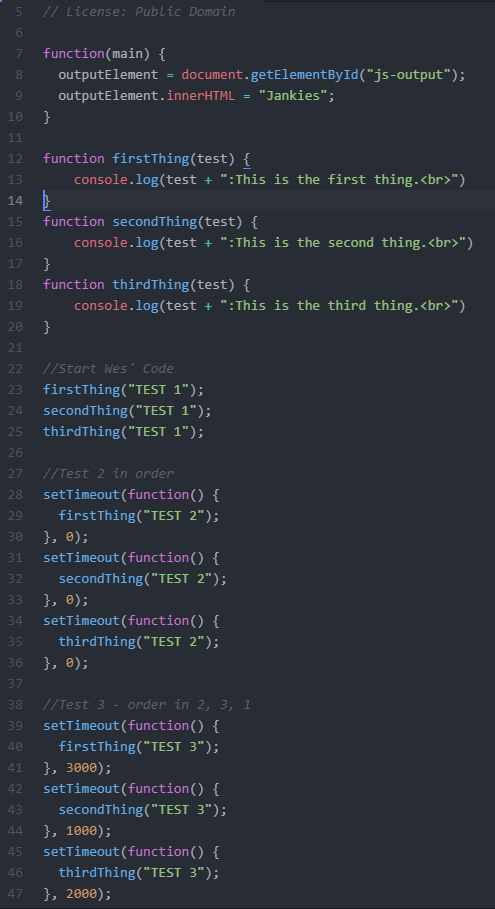

In this lab, we had to create the Lab 8 Folder and play with anon functions & callbacks in JavaScript. We had to create three functions, print to test them, then set an anonymous function to call our three functions. We had to test our functions a total of three times.
I did not come across any problems in this lab.
The following includes the results of this lab.
